root:~# whoami
David Moreau Simard
dmsimard@iweb.com
IT Architecture Specialist @ iWeb
Openstack, Ceph, Swift, Puppet, Xenserver
High availability web/database clusters
<3 Python
dmsimard@iweb.com
IT Architecture Specialist @ iWeb
Openstack, Ceph, Swift, Puppet, Xenserver
High availability web/database clusters
<3 Python
What is Ceph ?
"Ceph is a distributed object store and file system designed to provide excellent performance, reliability and scalability."
Ceph.com
Ceph was created by Sage Weil as part of a Ph.D thesis in Computer Science.
Sage Weil co-founded Dreamhost and also founded Inktank, the company today behind Ceph.
Sage Weil co-founded Dreamhost and also founded Inktank, the company today behind Ceph.
Distributed storage ?
Your laptop
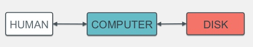
A small business
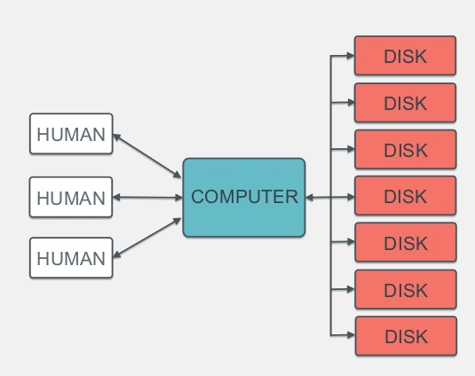
A (growing) small business
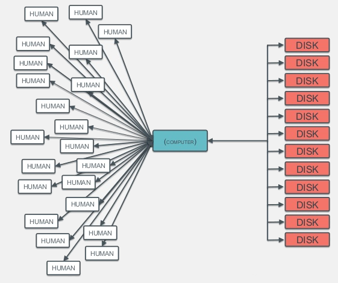
More servers ?
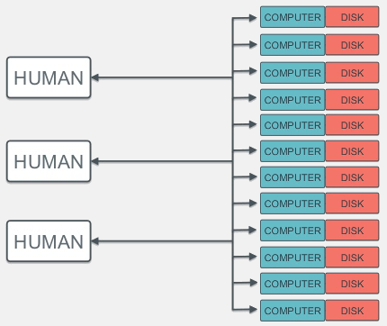
A SAN ?
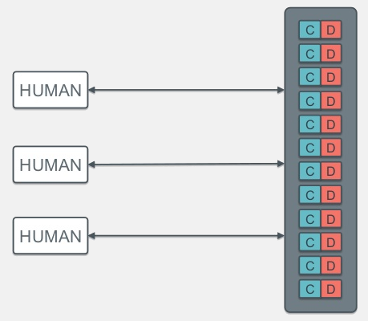
A SAN is expensive.
Expensive hardware
Expensive licenses
Expensive support
Proprietary software (& hardware)
Vendor lock-in
Expensive licenses
Expensive support
Proprietary software (& hardware)
Vendor lock-in
Ceph
Built to run on commodity hardware
Free
Open source
Awesome.
Free
Open source
Awesome.
The Ceph software stack
The Ceph daemons
|
OSD 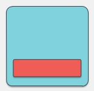 |
Object Storage Daemon
|
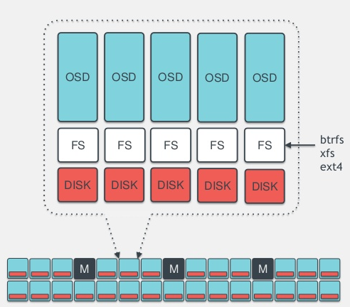 |
|
Mon |
Monitor
|
Only used for CephFS, the shared and distributed filesystem
Not production ready
Not production ready
|
MDS |
Meta Data Server
|
|
RGW |
Rados Gateway
|
Cool enough already, right ?
What makes Ceph really unique ?
What makes Ceph really unique ?
CRUSH
Controlled Replication Under Scalable Hashing
Controlled Replication Under Scalable Hashing
|
CRUSH 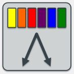 |
|
How CRUSH distributes data in Ceph
Pools
Logical container for your data
Contains placement groups
Images (ex: RBD) reside in pools
Images are striped across placement groups
Replication configured per-pool
Custom CRUSH rules
Contains placement groups
Images (ex: RBD) reside in pools
Images are striped across placement groups
Replication configured per-pool
Custom CRUSH rules
Placement groups
Objects are stored in placement groups
Objects aren't replicated, placement groups are
Rule of thumb: 100 PGs per OSD
More PGs: better data distribution
The more PGs, the more CPU intensive it becomes
Objects aren't replicated, placement groups are
Rule of thumb: 100 PGs per OSD
More PGs: better data distribution
The more PGs, the more CPU intensive it becomes
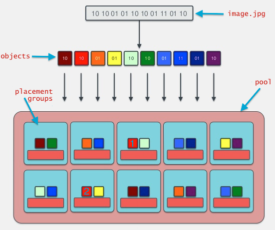
What if you lose an OSD ?
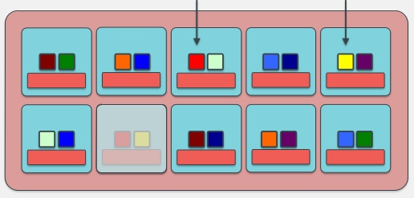
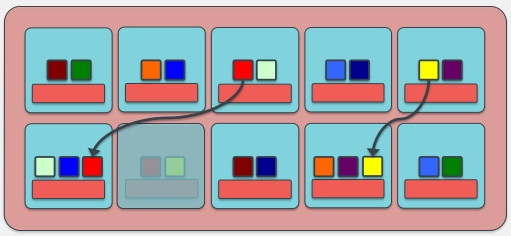
Let's talk $$$
A real life scenario
A real life scenario
Ceph with Openstack ?
Block Storage
Integrated with Cinder and Nova.
Similar to iSCSI, but better :D
RBD is ontegrated in the kernel since 2.6.34 (May 2010)
Similar to iSCSI, but better :D
RBD is ontegrated in the kernel since 2.6.34 (May 2010)
~# modprobe rbd ~# rbd map mydiskimage --pool mypool --name client.admin -m mon01.ceph ~# mkfs.ext4 /dev/rbd/mypool/mydiskimage ~# mount /dev/rbd/mypool/mydiskimage /mnt
Images
Integrated with Glance.
Store your images directly in Ceph !
Store your images directly in Ceph !
Object Storage
Alternative to Swift in Openstack.
Compatible API with Swift and Amazon S3.
Compatible API with Swift and Amazon S3.
Shared and Distributed Filesystem
CephFS
Alternative to GlusterFS, OCFS, etc.
POSIX-Compliant
Either kernel client or FUSE
Soon.
:(
Alternative to GlusterFS, OCFS, etc.
POSIX-Compliant
Either kernel client or FUSE
Soon.
:(
Who uses Ceph ?
* Logos trademark and copyright to their respective owners